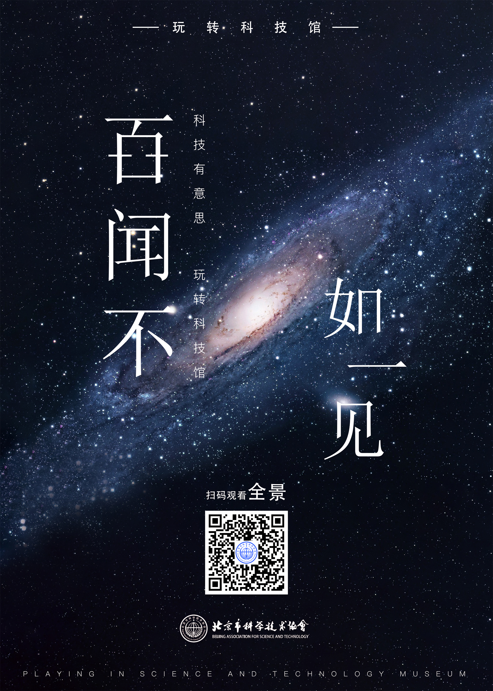

ERROR:
Javascript not activated
益思文化
EASCO创设于2014年，是一家致力于新媒体全产业链运营、创意营销及广告、会展、活动策划执行的专业机构。多年来充分聚合运营资源和从业经验，已为超过100家客户提供精准有效的自媒体、户外媒体传播及全案策划、线下会务、活动承办等一站式整合营销服务。服务客户包括：BMW、奥迪、中国人寿、一汽大众、上海大众、天猫等国内外知名企业。

地图导航
视频
您的浏览器不支持 video 标签。
EASCO创设于2014年，是一家致力于新媒体全产业链运营、创意营销及广告、会展、活动策划执行的专业机构。多年来充分聚合运营资源和从业经验，已为超过100家客户提供精准有效的自媒体、户外媒体传播及全案策划、线下会务、活动承办等一站式整合营销服务。服务客户包括：BMW、奥迪、中国人寿、一汽大众、上海大众、天猫等国内外知名企业。